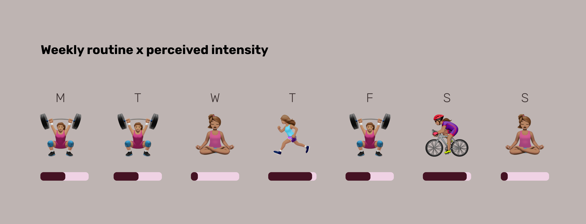
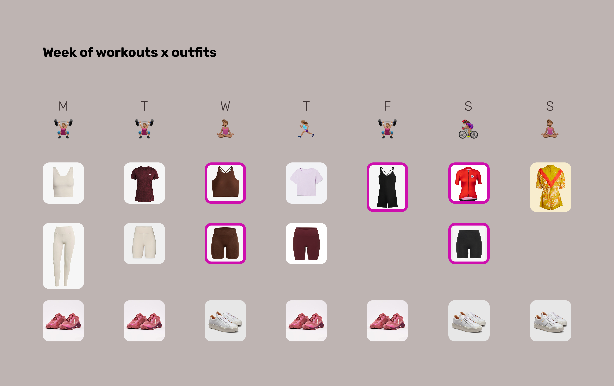

Workout Capsule
Design • Fashion • Fitness
Aug 06
Making your workouts stylish is the first
step to a fitness routine!
I try to stay active every day – and while
it’s good for my health, I’m not gonna lie, it’s
hard. You’ll find lots of think pieces and apps
pushing you to stay motivated and wake up
early to beat everyone else.
Something like:
your hard-earned sweat is what sets you apart
kind of message. You can see the posts: dark high
contrast photography, bold big text sort of style.
For me, sticking to a routine and giving my all on the mat also requires extra motivation, even if I would consider myself a naturally sporty inclined person. But honestly, what I think could make a real difference? Not joining a gym or taking group classes – I’m not in the business of paying extra money – but finding the right outfit.
Nothing beats feeling cute when I have another dumbbell killer set to do.
However, my workout closet needs a revamp, so today we are going to use this as a case study to develop a capsule wardrobe. Hopefully, you can use the formulas here to create your own.
Let’s go!

I'm the loud print. I'm the friend they find thanks bright colors.
1) Research Questions
When creating your capsule wardrobe you need to start by asking yourself two key questions: in what context will you use your clothes, and how often do you need to refresh them?
Like in product design, you have to think about the user's needs. Your day-to-day outfits depend on your activities. It’s very different if you have to run errands up and down using public transportation in a big city than if you work in an office and move by car.
If your days are too different, consider what I’m doing: I keep one main wardrobe throughout the year that is flexible enough to accommodate different situations, and now I’m developing a smaller capsule for my workouts. Clothes don’t overlap here, so it makes sense to keep them separate.
You can have a super minimal wardrobe if you can do laundry every 3 days, but if your washing cycle is once every two weeks, you will need more clothes.
The style and amount depends on your needs, so make sure you know them before you start.
It wasn't a 7 but 4...
2) Detailed Review
Let’s dive deeper into the main questions with some extra questions.
We already know I need cute workout outfits so I can move every day. Even on rest days, I do active recovery or yoga. I also do laundry once per week, so I need outfits for 7 days.
2.1) Personal Considerations
So, what sports do I like to do?
- Strength training
- Dancing
- Yoga
- Hiking
- Cycling
- Bouldering
I have a good variety here. The first three fall under the indoor at-home workout category, just me and a YouTube video. The others are outdoors or at a special gym, so I might need more equipment to do them. If I’m completely honest, most days I’m doing the first three, and on the weekends I go out for cycling. It’s been a cold and rainy summer, so I haven’t had much chance to venture into the mountains, and my bouldering buddies have been traveling.
My weekly routine and how intense it feels.
2.2) Schedule
What’s my routine like?
My routine is based on: this training plan.
I want something sustainable that doesn’t feel like a chore and gives me enough variety. My goal is to stay fit and strong doing the things I like.
- Strength training → 3 times → Monday, Tuesday, Friday
- Yoga → 1+ time(s) per week → Wednesday + Sunday
- HIIT → 1 time per week → Thursday
- Light cardio* → 1–2 times per week → Saturday + Sunday
I would say the types of outfits depend on how intense the activity is. If we evaluate them on an intensity scale, we’ll see how much support is needed from when I’m jumping around:
From this I can start drawing concrete numbers of what I need:
- 2 low-intensity sets- Can also be used for lounging
- 4 HIIT + strength training sets | high intensity- Can be used for hiking too
- 1 cycling set | workout-specific - Depending on the ride, I can use a chill outfit
For cycling, I’m being a bit greedy. I watched too much Tour de France and now I want a sport-specific outfit. That way I can pretend I’m Jonas Vingegaard.
2.3) Inventory
What items do I already have?
This can be easily answered by my Figma file. I kept a section for sport/lounge, so now we can take a look at it.
Here we are mixing summer and winter clothes.
3) Calculations
To be honest, my workout closet was feeling a bit dull, so I did some cleaning before showing you this trimmed-down version. So based on what I still have: what pieces do I need to add? Being a lady, I need some extra support — not just tops and bottoms — so I added 2 sports bras to make sure I have one for every day I'm active.
If we look at the week, I need:
- 1 low-intensity set
- 1 high-intensity set
- 1 cycling set
- 2 sports bras
This is how a whole week of outfits could look like:
Now that I made my wishlist, how much do I want to spend? As I said, I’m not in the business of overspending, so my plan is to purchase everything from a second-hand platform. I’ve name-dropped it in the past, and I use it frequently when I need to replace an item in my closet. Hey Vinted, how about a collab or sponsorship?
Back to calculations: I think I can get away with getting all this new gear for under 100 euros. Listen, if budget wasn’t a problem and we were going top shelf, we could really sink in a few hundred. Some sport brands will sell you a cycling jersey for 70 euros. Sadly, I am not Jonas Vingegaard.
So after a few hours of browsing, here is my wishlist. The ~ symbol represents estimated prices, since the final cost will vary a bit depending on shipping fees. Time to place some orders.
Still under 100€!
4) Results
Some of the pieces I’ve ordered have already arrived! I will share some pictures now — it’s nice to see the final fits, right?
So what do you think? Do you like my workout capsule wardrobe? I have to admit I’m looking forward to dancing to "Bad Romance" on Just Dance while wearing that black jumpsuit. Plus, this weekend screams long bike ride to show off my new cycling jersey. Who knows, I could be fit enough to join a Tour de France team. It starts by looking the part.
That’s Enough About Me!
What do you think? What should I focus on next?
What's your go to summer sport? Do you have a special routine for enjoying the sunshine and warm weather?
Let me know—shoot me an email! 😊
📩
sifuentesanita@gmail.com